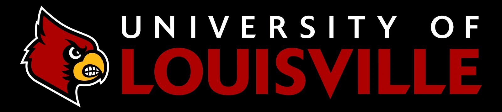

This is where I think out loud. Not polished deliverables — more like a sketchpad. Research I'm digging into, ideas I'm turning over, projects I'm tinkering with. Some of it will turn into something. Some of it probably won't.
If something here sparks a conversation, my inbox is open.
Reading
Amy Edmondson on psychological safety. Thinking about what this means for learning environment design, not just team management.
Experimenting
Testing workflows where AI generates first-draft storyboards from a design brief. Faster than blank-page starts; surprisingly good at catching structural gaps.
Studying
Final push toward my B.S. at UofL — current coursework deepening the research muscle I want to bring to instructional design practice.
As AI voiceovers become indistinguishable from human narration, the question stops being "can learners tell the difference?" and starts being "does it matter if they can?" I'm working through the cognitive load and parasocial relationship literature to find out.
Early hypothesis: disclosure matters more than the voice itself. But the data is thin and the variables are messy. This one's going to take a while.

Currently completing a B.S. in Organizational Leadership and Learning (4.0 GPA, expected 2026) — a skills-driven program that blends leadership theory, workforce development, and organizational change across specialized tracks including human resources, project management, and healthcare leadership.
Next up: an M.S. in Human Resources & Organization Development at UofL, beginning January 2027. The through-line across both programs is learning how organizations change — and how to design learning that actually drives that change.
View Program →Building a repeatable production workflow for AI-enhanced video — prompt libraries, quality benchmarks, disclosure templates, and post-production checklists. Designed to be handed off to L&D teams who want to adopt AI media without a steep learning curve.
Tools: Veed.io, ElevenLabs, HeyGen, After Effects
A personal library of reusable Articulate Storyline interactions — drag-and-drop templates, branching architectures, gamification mechanics — that speed up development without sacrificing visual quality. Eventually I'll make this public.
Articulate Storyline 360 · Custom JS
A late night talk show about astronomy and space science — broadcast live on Twitch while exploring the galaxy in Elite Dangerous. Real science, real conversation, virtual spaceship. Turns out explaining astrophysics to strangers in a cockpit view of the Milky Way is surprisingly good instructional design practice.
Twitch Partner → twitch.tv/malforthewin
Something I get asked about informally all the time — a structured review of aspiring LXDs' portfolios with concrete, actionable feedback. Not sure yet what the right format is. Maybe async video, maybe cohort-based. Still thinking.
Format TBD · Concept stage